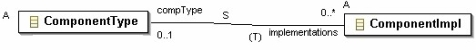

Previous
Next
Previous
Next 
| 2.1 The Graphical Meta Model Notation |
A UML class diagram notation has been used to graphically
present the Ecore meta model of
AADL (see Figure 2). Classes are distinguished from other symbols by a little table-like icon
in the
upper left corner. A hierarchy of abstract and concrete classes is used to represent the
different
object classes of an AADL model. Concrete classes can be instantiated into AADL model objects.
Abstract classes represent characteristics that are common to a group of AADL model objects.
For example, the abstract class NamedElement represents AADL model objects that have a name.
A line with a hollow triangle denotes a sub class super class relationship and points to the super
class. Abstract classes are marked with the letter A in the upper left corner.

Figure 2 Meta Model Class Notation
Classes in the meta model can also contain attributes,
i.e., typed name value pairs. The attribute
values can be of a number of predefined types or can be enumeration literals of user-defined
enumerations. Figure 2 shows a multi-valued comment attribute and a single-valued name attribute.
Objects in an AADL model are related to each other through
two types of associations: a
containment association, and a reference association. A containment association
specifies that
one object is part of another object. The UML symbol for composition aggregation, i.e., a line
with
a diamond at the container end and an open arrowhead at the contained end, is used to represent
containment associations (see the containment of ProcessSubcomponents in ProcessImpl
in
Figure 3).
A reference association specifies that objects are accessible
from other objects. Reference
associations can be unidirectional, i.e., one object can access another object, or bi-directional,
i.e., either object can access the other object. Unidirectional reference associations are shown
as
a line with an arrowhead and a label at the destination, the UML symbol for unidirectional
associations (see the reference from ProcessSubcomponent to ProcessClassifier in Figure
3). Bi-
directional reference associations are shown as a line without an arrowhead and labels on both
ends, the UML symbol for bi-directional associations (see the reference between ProcessType and
ProcessImpl in Figure 3).
For bi-directional reference associations, the reference
to another object is kept consistent with the
reference in the opposite direction. If one of the labels of a bi-directional reference association
is
marked with a (T), then references in this direction are transient, i.e., not persistently stored in
XML. On loading an XML document, the reference marked as transient is re-established for the in-
core representation.
Both containment and reference associations can have
a multiplicity to specify the number of
association instances. Figure 3 shows a containment association between ProcessImpl and
ProcessSubcomponents. The association indicates that a process implementation can contain
zero or one process subcomponents subclause objects. Figure 3 also shows a unidirectional
reference association from a process subcomponent to a process classifier and indicates that the
classifier reference is optional, i.e., zero or one. For the bi-directional reference association
between process types and process implementations, the reference from the implementation to the
type is required to be one and is stored persistently, while the reference from the type to the
implementations is zero or more and is maintained only in-core.

Figure 3 Containment and Reference Associations
Reference associations between classes may be marked
with an S for specialize (see Figure 4) if
one or both are abstract classes. Subclasses of these abstract classes specify specializations
of
this reference that restrict the endpoints of the reference to the objects of the classes involved in
the specialized associations. For example, the reference association between ProcessType and
ProcessImpl in Figure 3 limits the reference to implementations and types of processes.

Figure 4 Relations with Specialization